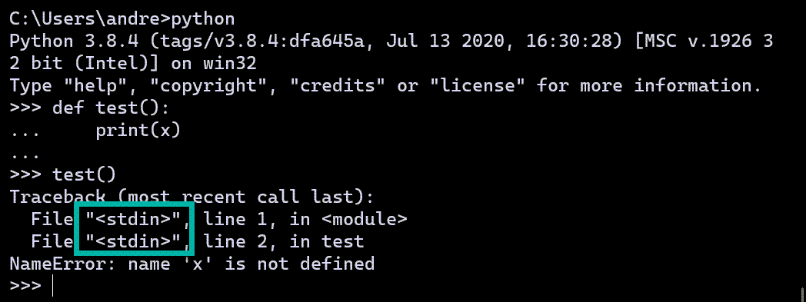

Using another REPL¶
Summary
Depending on which REPL you are using, you will need to use two lines of code, which will look like the following:
from friendly.some_version import something
do_something()
A REPL (Read-Eval-Print Loop) is an interactive mode where
you are invited to type in some Python code after a
prompt (most often written as >>>). Python reads
this code, interprets what it means, and might “print” (show) some
result before showing another prompt waiting for us to enter
more code.
Other terms can be used instead of REPL, such as: Python console, Python shell, and Python interpreter.
Many programming environments include their own REPL, including friendly with its friendly console. Depending on which of these programming environment you use, you can enable friendly in different ways.
Python’s REPL¶
First, I compare using Python’s own REPL with using the friendly console.
{kind=link}
Each time I entered a line of code or a block of code in a Python interpreter,
it appears to be saved in a file which is always named <stdin>.
The actual code entered on a given line of each such “file” is never available.
Compare this with what happens when I use a friendly console:

The name of the “file” is <friendly-console:N> where N is a different
integer for each “file”.
Notice how the traceback shown by friendly includes the lines of code that caused the problem. To find the cause of the problems that gave rise to a traceback, friendly needs to have this information. For this reason, friendly cannot be “installed” in a standard Python interpreter. I can however start a console using the following:
from friendly import start_console
start_console(formatter="dark")
These two lines of code are shown below (1).

For the function start_console,
I used the option formatter="dark" (2) so
that I got the coloured output when using a terminal
which has a dark background. The default would correspond
to non-coloured text as some other REPL do not permit
to show coloured output in this way.
Since I am using the friendly console, functions such as what() (3)
are available.
Other REPL¶
Unlike Python’s REPL, some other REPL (but not all) are designed so
that you can get the information about the lines of code which lead to
an exception. In this case, you can use these REPL directly and not
start the friendly console using start_console(). However, in order
to make sure that functions like what(), why(), etc., are
available, the first line of code will have to be something like:
from friendly.NAME import *
The import *, which is often not recommended, is required here so that
you can use functions like what(), etc. The alternative would be to
either list every single function required:
from friendly.NAME import what, why, where, ...